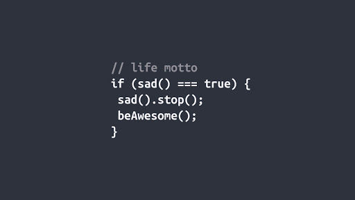

Easy to use
Simply add the className "auto-carousel" to the parent Element and it will become a carousel with all the direct children as carousel elements. The default hold period is 1500ms and transition period is 400ms

Demo
Simply add the className "auto-carousel" to the parent Element and it will become a carousel with all the direct children as carousel elements. The default hold period is 1500ms and transition period is 400ms
The hold time and transition time and other properties of the carousel can be configured easily. There are two ways to achieve that:
<div class="auto-carousel" data-transition-time="600" data-hold-time="3000" > children...
</div>
let slider=new Slider(document.querySelector("#myCarousel"); slider.holdTime=3000; slider.transitionTime=600;
The children of the carousel can be any html element,
this child element will be stretched to the full area of the carousel
the example along side contains normal html elements/text/forms etc as the carousel children
carousel automatically adapts to the changes in width and height of the
parent elements. hence we can use it in our responsive designs;
the example along side can be resized using the handle on bottom-right corner